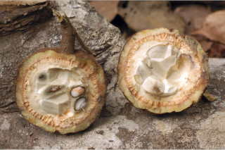
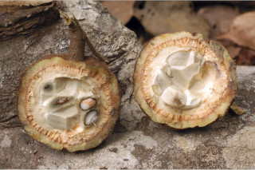

Trees up to 10 m tall.
10 ಮೀ. ಎತ್ತರದವರೆಗೆ ಬೆಳೆಯುವ ಮರಗಳು.
10 മീറ്റര് വരെ ഉയരമുളള മരങ്ങള്.
மரங்கள், 10 மீ. உயரம் வரை வளரக்கூடியது
Bark brownish, fissured; blaze pinkish.
ತೊಗಟೆ ಕಂದು ಬಣ್ಣದಲ್ಲಿರುತ್ತದೆ ಮತ್ತು ಸೀಳಿಕಾ ಮಾದರಿಯಲ್ಲಿರುತ್ತದೆ;ಕಚ್ಚು ಮಾಡಿದ ಜಾಗ ನಸುಗೆಂಪು.
വിണ്ടുകീറിയ, തവിട്ടുനിറത്തിലുളള പുറംതൊലി; വെട്ട്പാടിന് പിങ്ക്നിറം.
மரத்தின் பட்டை ப்ரவுன் நிறமானது, பிளவுகளுடையது; உள்பட்டை பிங்க் நிறமானது.
Branchlets subterete, minutely pubescent.
ಕಿರುಕೊಂಬೆಗಳು ಉಪ-ದುಂಡಾಗಿದ್ದು ಸೂಕ್ಷ್ಮ ಮೃದುತುಪ್ಪಳದಿಂದ ಕೂಡಿರುತ್ತವೆ.
ചെറുതായി നനുത്തരോമിലമായ, ഏതാണ്ട് ഉരുണ്ടിരിക്കുന്ന ഉപശാഖകള്
சிறிய நுனிக்கிளைகள் குறுக்குவெட்டுத் தோற்றத்தில் வளையம் போன்றது, நுண்ணிய உரோமங்களுடையது.
Leaves simple, alternate, distichous; stipules caducous; petiole 0.7-2.2 cm long, subterete, pubescent; lamina 8-23 x 3.5-10 cm, usually oblong to elliptic-oblong, apex caudate - acuminate, base acute or cuneate, margin serrate, chartaceous, glabrous; midrib raised above; secondary_nerves 5-7 pairs, obliquely ascending towards apex; tertiary_nerves closely_horizontally_percurrent.
ಎಲೆಗಳು ಸರಳವಾಗಿದ್ದು ಪರ್ಯಾಯ ಮಾದರಿಯಲ್ಲಿ ಜೋಡಣೆಗೊಂಡಿದ್ದು ಕಾಂಡದ ಎರಡೂ ಕಡೆ ಎದುರು ಬದರಿನ ಸಾಲಿನಲ್ಲಿರುತ್ತವೆ;ಕಾವಿನೆಲೆಗಳು ಉದುರಿ ಹೋಗುವಂತವು; ತೊಟ್ಟುಗಳು 0.7 -2.2 ಸೆಂ.ಮೀ. ವರೆಗಿನ ಉದ್ದ ಹೊಂದಿದ್ದು ಉಪ-ದುಂಡಾಗಿರುತ್ತವೆ ಮತ್ತುಮೃದು ತುಪ್ಪಳದಿಂದ ಕೂಡಿರುತ್ತದೆ; ಪತ್ರಗಳು 8-23 X 3.5-10ಸೆಂ.ಮೀ.ಗಾತ್ರ ಹೊಂದಿದ್ದು ಸಾಮಾನ್ಯವಾಗಿ ಚತುರಸ್ರದಿಂದ ಅಂಡವೃತ್ತ –ಚತುರಸ್ರದವರೆಗಿನ ಆಕಾರ ಹೊಂದಿದ್ದು, ಬಾಲರೂಪಿ- ಕ್ರಮೇಣ ಚೂಪಾಗುವ ತುದಿ,ಚೂಪಾದ ಅಥವಾ ಬೆಣೆಯಾಕಾರದ ಬುಡ ಮತ್ತು ಗರಗಸ ದಂತಿತವಾದ ಅಂಚು ಹೊಂದಿರುತ್ತವೆ; ಮೇಲ್ಮೈ ಕಾಗದವನ್ನೋಲುವ ಮಾದರಿಯಲ್ಲಿರುತ್ತದೆ ಮತ್ತು ರೋಮರಹಿತವಾಗಿರುತ್ತದೆ;ಮಧ್ಯನಾಳ ಪತ್ರದ ಮೇಲ್ಭಾಗದಲ್ಲಿ ಮೇಲೆದ್ದಿರುತ್ತದೆ;ಎರಡನೇ ದರ್ಜೆಯ ನಾಳಗಳು5-7 ಜೋಡಿಗಳಿದ್ದು ಅಗ್ರದ ಕಡೆಗೆ ಓರೆಯಾಗಿ ಆರೋಹಣಗೊಳ್ಳುತ್ತವೆ;ಮೂರನೇ ದರ್ಜೆಯ ನಾಳಗಳು ಕಡಿಮೆ ಅಂತರದಲ್ಲಿದ್ದು ಲಂಬ ರೇಖೆಗೆ ಸಮಕೋನದಲ್ಲಿದ್ದು ಎಲೆದಿಂಡಿಗೆ ಅಡ್ಡವಾಗಿ ಕೂಡುವಂತವು.
ലഘുവായ ഇലകള്, ഏകാന്തരമായി, തണ്ടിന്റെ രണ്ടുഭാഗത്ത് മാത്രമായടുക്കിയവിധത്തിലാണ്; എളുപ്പം കൊഴിഞ്ഞ് വീഴുന്ന അനുപര്ണ്ണങ്ങള്; നനുത്ത രോമിലമായ, ഏതാണ്ട് ഉരുണ്ടിരിക്കുന്ന, 0.7 സെ.മീ മുതല് 2.2 സെ.മീ വരെ നീളമുളള ഇലഞെട്ട്; പത്രഫലകത്തിന് 8 സെ.മീ മുതല് 23 സെ.മീ വരെ നീളവും 3.5 സെ.മീ മുതല് 10 സെ.മീ വരെ വീതിയും, സാധാരണയായി ആയതാകാരം തൊട്ട് ദീര്ഘവൃത്തീയ-ആയതാകാരംവരെയുമാകാം, പത്രാഗ്രം വാലുളള - ദീര്ഘാഗ്രമാണ്, പത്രാധാരം നിശിതമോ ആപ്പാകാരത്തിലോ ആണ്, ദന്തിതമായ അരികുകള്, കടലാസ് പോലത്തെ പ്രകൃതം, അരോമിലം; മുകളില് ഉയര്ന്നുനില്ക്കുന്ന മുഖ്യസിര; പത്രാഗ്രത്തോടടുത്ത് ചരിഞ്ഞ് ആരോഹണക്രമത്തിലുളള 5 മുതല് 7 വരെ ജോഡി ദ്വിതീയ ഞരമ്പുകള്; തിരശ്ചീനമായി അടുത്ത പെര്കറന്റ് വിധത്തിലുളള ത്രിതീയ ഞരമ്പുകള്.
இலைகள் தனித்தவை, மாற்றுஅடுக்கமானவை, இருநெடுக்கு வரிசையிலையடுக்கம் (டைஸ்டிக்கஸ்); இலைக்காம்பு 0.7-2.2 செ.மீ. நீளமானது, குறுக்குவெட்டுத் தோற்றத்தில் வளையம் போன்றது, உரோமங்களுடையது; இலை அலகு 8-23 X 3.5-10 செ.மீ. பொதுவாக நீள்சதுரம் முதல் நீள்வட்டம்-நீள்சதுர வடிவானது, அலகின் நுனி வால்-அதிக்கூரியது, அலகின் தளம் கூரியது, அல்லது ஆப்பு வடிவானது, அலகின் விளிம்பு ரம்ப பற்களுடையது, சார்ட்டேசியஸ், உரோமங்களற்றது; மையநரம்பு மேற்புறத்தில் அலகின் பரப்பைவிட உயர்ந்து இருக்கும்; இரண்டாம் நிலை நரம்புகள் 5-7 ஜோடிகள், சாய்ந்தவாறு நுனி நோக்கி வளைந்தது; மூன்றாம் நிலை நரம்புகள் நெருக்கமானது, விளிம்பை நோக்கியவாறு இணையான பெர்க்கரண்ட்.
Flowers in axillary short cymes or solitary, tomentose; petals white.
ಹೂಗಳು ಅಕ್ಷಾಕಂಕುಳಿನಲ್ಲಿನ ಕಿರು ಉದ್ದದ ಮಧ್ಯಾರಂಭಿ ಪುಷ್ಪಮಂಜರಿಯಲ್ಲಿರುತ್ತವೆ ಅಥವಾ ಒಂಟಿಯಾಗಿರುತ್ತವೆ ಮತ್ತು ದಟ್ಟ ಮೃದು ತುಪ್ಪಳದಿಂದ ಕೂಡಿರುತ್ತವೆ; ಪುಷ್ಪ ದಳಗಳು ಬಿಳಿ ಬಣ್ಣದವು.
വെളുത്ത ദളങ്ങളുളള, പൂക്കള് ഒറ്റയായോ, രോമിലമായ കുറിയ കക്ഷ്യ സെമുകളിലോ ഉണ്ടാകുന്നു.
மலர்கள் இலைக்கோணங்களில் அமைந்த சிறிய சைம் மஞ்சரி அல்லது தனி மலராகமைந்தவை, உரோமங்களுடையது; அல்லி இதழ்கள் வெள்ளை நிறமானது.
Berry, woody, globose, apiculate 6 (-10) cm across usually brown tomentose, black when young; seeds numerous.
ಬೆರ್ರಿಗಳು ಗೋಳಾಕಾರದಲ್ಲಿದ್ದು 6(-10) ಸೆಂ.ಮೀ.ವರೆಗಿನ ಅಡ್ಡಗಳತೆ ಹೊಂದಿರುತ್ತವೆ ಮತ್ತು ಸಾಮಾನ್ಯವಾಗಿ ಕಡು ಕಂದು ಮೃದುತುಪ್ಪಳದಿಂದ ಕೂಡಿರುತ್ತವೆ ಮತ್ತು ದಾರುವಿನಂತಿರುತ್ತವೆ ಹಾಗೂ ಅಗ್ರದಲ್ಲಿ ಸೂಕ್ಷ್ಮ ಕಿರು ಮುಳ್ಳನ್ನು ಹೊಂದಿರುತ್ತವೆ; ಬೀಜಗಳು ಅಸಂಖ್ಯ.
ധാരാളം വിത്തുകളുളള കായ, ഇളതായിരിക്കുമ്പോള് കറുത്തതും സാധാരണയായി തവിട്ട് രോമിലവുമായ, 6 സെ.മീ (10 സെ.മീ വരെ) കുറുകേയുളള അറ്റത്തൊരു മുനപ്പുളള മരംപോലുളള ഗോളാകാര ബെറിയാണ്.
முழுச்சதைகனி (பெர்ரி), தடித்தவை, கோளவடிவானது, நுனி நீட்சியுடையது, 6 (-10) செ.மீ. குறுக்களவுடையது, பொதுவாக ப்ரவுன் நிறமான உரோமங்களுடையது; விதைகள் எண்ணற்றவை.


 
